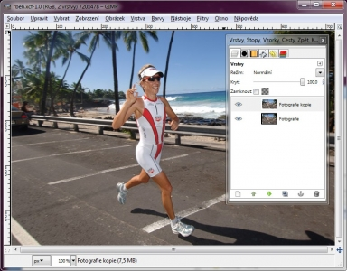
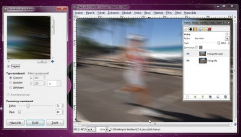
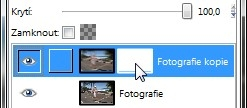
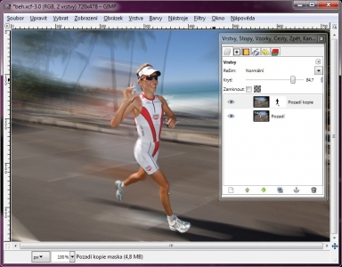

Web je již jen v režimu pro čtení a není možné přidávat nové komentáře nebo dotazy do fóra. Díky za přízeň.
Main menu
You are here
Efekt rozmáznutí pohybem
27. February 2010 - 11:00 — Lukáš
- Fotografii si v Gimpu otevřeme a duplikujeme ji
 - Přepneme se na duplikovanou vrstvu
- Přejdeme na: Filtry → Rozostření → Rozmáznutí pohybem. Hodnoty nastavíme, tak jak uznáme za vhodné
 - Vrstvě přidáme masku (Bílá – úplné krytí)
 - Zvolíme nástroj štětec, stopu s názvem „Circle Fuzzy“ (libovolná velikost) a barvu popředí nastavíme na černou.
- Nyní stopou „vybarvíme“ postavu, objekt, který má zůstat zaostřený
 - Hotovo :)
{kind=link}
{kind=link}
{kind=link}
{kind=link}
Kategorie:
Web je již ukončen. Nebude zde přibývat žádný nový obsah. Případné dotazy prosím na l.bacovsky(a)outlook.cz
Comments
Kurna, nechapu tvuj postup !!!
Re: Kurna, nechapu tvuj postup !!!
gimp
To: Kurna nechapu....
Re: Efekt rozmáznutí pohybem
Re: Efekt rozmáznutí pohybem
Re: Efekt rozmáznutí pohybem
Re: Efekt rozmáznutí pohybem
...
Add new comment